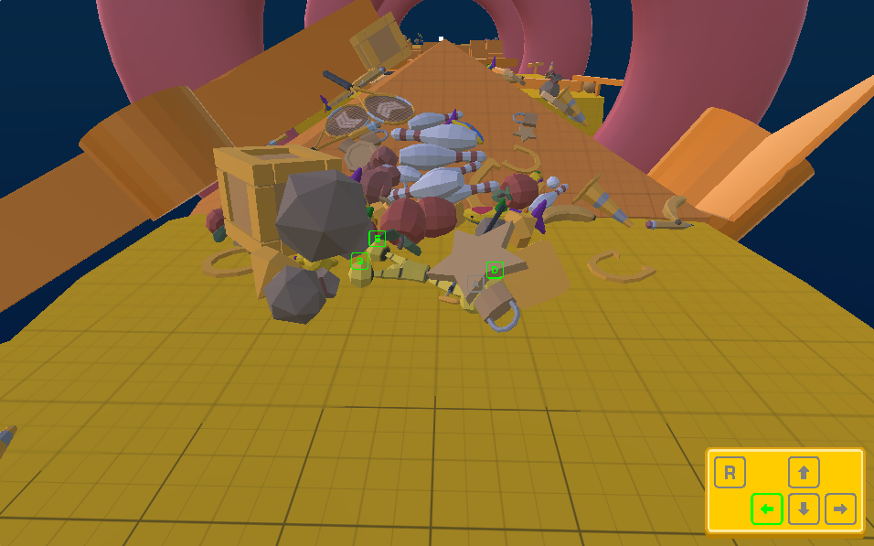
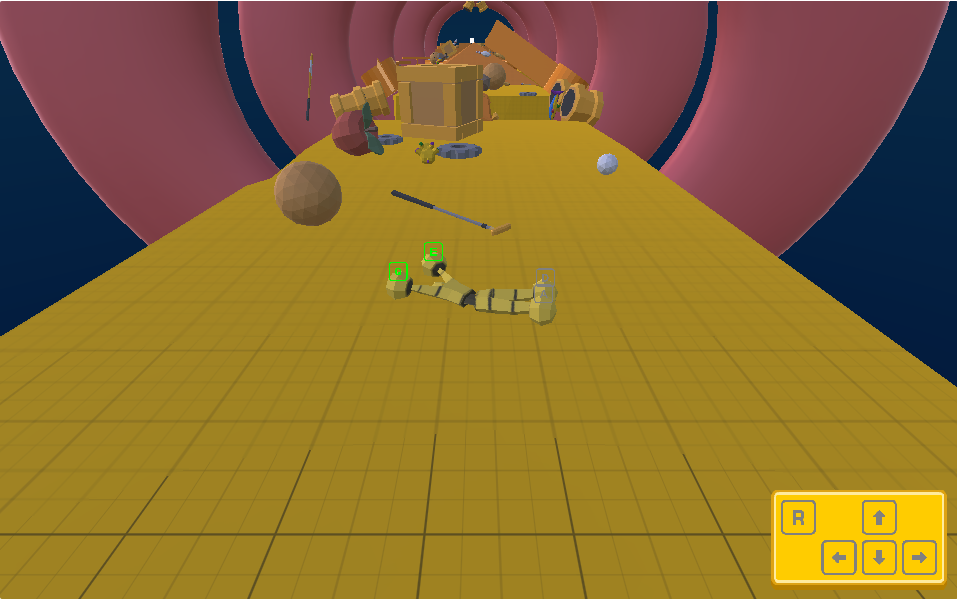
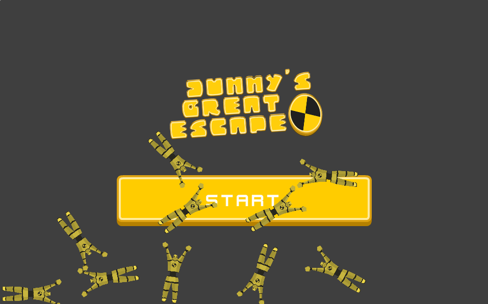

Wciel się w Dummy'ego, ekscentryczną postać typu ragdoll, i pokonuj lepkie powierzchnie, podstępne przeszkody oraz wymagające łamigłówki, indywidualnie sterując każdą kończyną. Gra, stworzona w silniku Unity 3D z obsługą WebGL, oferuje świeże spojrzenie na precyzję i strategię, inspirowane rosnącą popularnością trudnych gier akcji-logicznych, takich jak Human Fall Flat i Chained Together.



Projektowania i implementacji zaawansowanego systemu fizyki ragdoll w Unity, tworzenia precyzyjnego sterowania postacią poprzez kontrolę poszczególnych kończyn, optymalizacji interakcji fizycznych oraz projektowania poziomów opartych na mechanikach fizycznych i zagadkach logicznych.